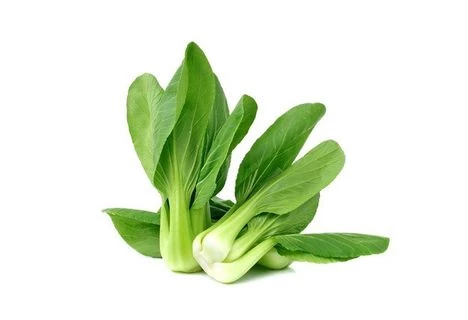

PAKCOY
Manfaat
Pakcoy (Brassica rapa) mengandung zat besi, kalium, fosfor, dan vitamin K yang bermanfaat untuk menjaga kesehatan tulang dan gigi. Selain itu, dapat menyehatkan sistem pencernaan, menyehatkan kesehatan mata, menurunkan tekanan darah dan mengurangi resiko serangan jantung.
Tempat Tumbuh
Pakcoy (Brassica rapa) dapat ditanam sepanjang musim. Pakcoy tumbuh pada ketinggian berkisar antara 5-1200 dpl dan optimal pada ketinggian 100-500 dpl dengan curah hujan 200 ml/bulan. 15-30 oC, kelembaban udara 80-90% intensitas cahaya 350 – 400 kal/cm2.
TEKNIK BUDIDAYA
1. Pembibitan
Pembibitan bisa dilakukan dengan persemaian langsung pada bedengan tapi dipisah dengan bedengan utamanya hingga bibit berdaun. Bisa juga di lakukan persemaian bibit pada polybag. Caranya taburkan bebih bibit pada polybag ataupun bedengan yang telah ada kemudian tutup dengan tanah lagi sekitar 2 cm, sirami bibit benih dengan cara di semprot. Tanaman bibit benih akan tumbuh daun sekitar 3-5 helai daun pada hari ke 3 atau 4 setelah persemaian, setelah itu benih dapat di pindahkan pada bedengan utama.
2. Persiapan Lahan
Tanah pada lahan untuk menanam pakcoy sebaiknya digemburkan dahulu, lalu buatlah bedengan dengan lebar bedengan berkisar 2meter dengan panjang menyesuaikan panjang lahan. Ratakan bedengan lalu beri pupuk kompos dengan dosis per perbandingan antara tanah dan kompos yaitu 1:1. Lalu padatkan tanah dan pupuk kompos dengan menyirami menggunakan air.
3. Penanaman
Setelah bedengan dan bibit sudah siap, maka buatlah lubang tanam pada bedengan dengan ukuran 4 cm x 6 cm atau 8 cm x 10 cm. Setelah lubang siap pindahkan bibit dari media tanam yang lain pada bedengan utama.
4. Pemeliharaan
Selama masa tanam penyiangan dapat dilakukan setidaknya 2 sampai 4 kali. Penjarangan tanaman juga perlu dilakukan yaitu pada saat tanaman telah memasuki 2 minggu setelah penanaman. Penyiraman harus dilakukan dengan rutin apalagi pada saat musim kemarau.
5. Panen
Pakcoy dapat dipanen ketika sudah mencapai umur 28 hingga 30 hari setelah penanaman tergantung cuaca, bibit serta perawatannya.